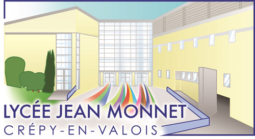
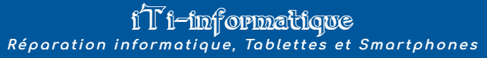
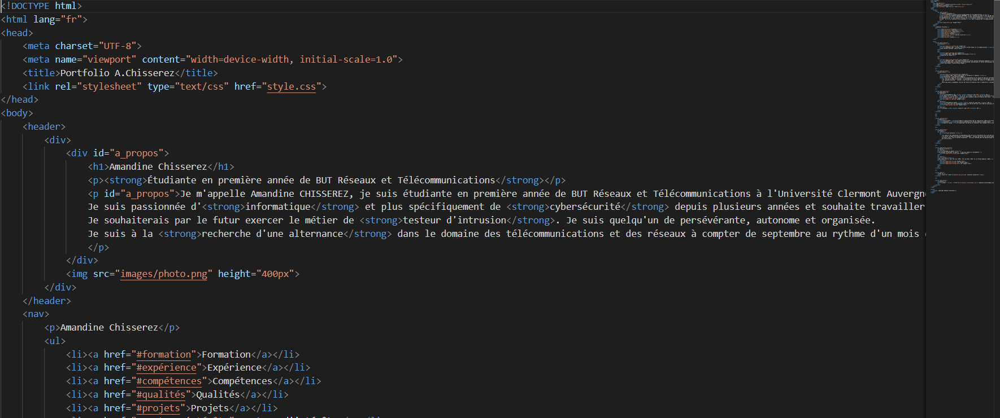
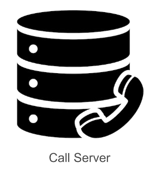
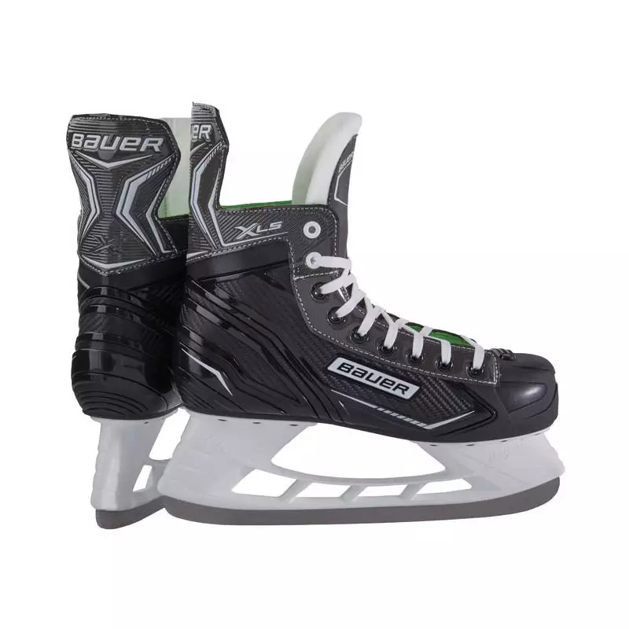
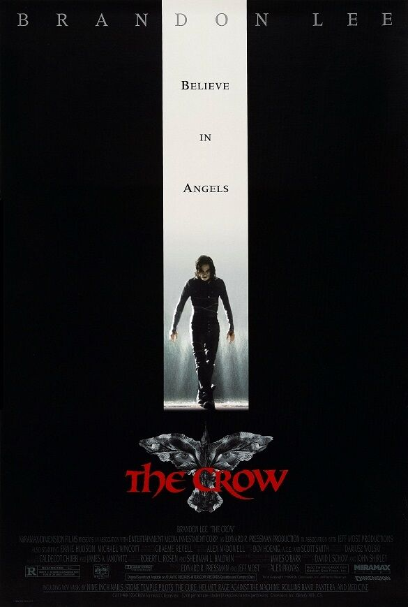
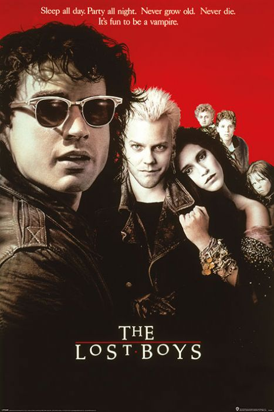

Formation

Septembre 2024 - Présent: 1ère année de BUT Réseaux et Télécommunications
IUT Clermont Auvergne, Aubière 63170
Mars 2024: Cambridge English Certificate
Obtention du niveau C1

Septembre 2021 - Juin 2024: Baccalauréats général section européenne anglaise
Spécialités Numérique et Sciences de l'Informatique, mathématiques et option mathématiques expertes
Lycée Jean Monnet, Crépy-en-Valois 60800
Expérience

Janvier 2021: Stage d'observation en entreprise (1 semaine)
iTi-Informatique, Crépy-en-Valois 60800
J'ai réalisée un stage dans une entreprise de maintenance et de revente de matériel informatique d'une durée d'une semaine.
J'ai, lors de ce stage, pu assister à la maintenance de divers appareils informatiques (ordinateurs, téléphones, console de jeux et vidéoprojecteur).
J'ai également participé à d'autres tâches telles que l'acceuil de clients et l'organisation de la boutique et du matériel informatique.
Cette expérience a grandement confirmé mon envie de travailler dans le domaine de l'informatique.
Compétences
Programmation web 75%
J'ai appris le HTML et le CSS lors de la réalisation d'un site web afin d'y présenter mon portfolio. J'ai réaliser ce projet en seule à l'aide des cours dispensés dans ma formation mais aussi à l'aide de mes recheches personnelles réaliser en autonomie.
Programmation python 85%
J'ai suivis des cours de programmation python lors de mon BUT mais aussi dans ma spécialité Numérique et Sciences de l'Informatique au lycée. Je suis notamment familières avec les listes et tableaux, les dictionnaires, la récursivité et la Programmation Orientée Objet.
Réseau
80%
J'ai acquis des compétences en réseau depuis le début de ma formation portant sur l'adressage IP, la configuration de point d'accés Wifi et de routeur. J'ai pu appliquer ces connaissances lors de nombreux travaux pratiques qui m'ont permis de les consolider.
Téléphonie 70%
Grâce aux cours théoriques ainsi qu'aux travaux pratiques, j'ai pu acquérir des compétences en téléphonie.
En effet, je suis désormais capable de configurer des téléphones IP et softphone mais aussi un callserver avec diverses fonctionnalité telles que le renvoi d'appel.
Qualités
Persévérance: J'ai appris la persévérance tout au long de mes études en me confrontant à mes erreurs mais aussi lors de la pratique du patin à glace où il faut persévérer afin de s'améliorer.
Autonomie: Je fais preuve d'autonomie lors de mes projets et prends plaisir à résoudre un problème à l'aide de mes recherches personnelles.
Esprit d'équipe: J'aime aider les autres et travailler tous ensemble vers un but commun tels que lors de la réalisation de différents travaux pratiques réalisés en groupe lors de ma formation.
Projets
Projet portfolio
Ce projet consistait à réaslié un site web en utilisant HTML et CSS dans le but de présenter mon portfolio.

Projet réseau
Le but de ce projet était de mettre en place un réseau privé en se servant d'un PC comme routeur. Le PC client connecté au PC routeur doit passer par celui ci afin d'obtenir un accés internet.
Projet téléphonie
Lors de ce projet, j'ai pu mettre en place et configurer un callserver ainsi que des téléphones IP et des softphones. J'ai de plus pu experimente avec différents services de téléphonies.

Centres d'intérêts
Patinage sur glace
Je pratique le patinage sur glace 1 à 2 fois par semaine en autodidacte.
J'aime m'améliorer et perséverer afin d'apprendre de nouveaux mouvements. J'apprécie également la vitesse que l'on peut atteindre en patinant sur la glace.

Films
J'apprécie regarder des films et découvrir de nouveaux films plus ou moins populaires afin d'en apprendre plus sur la culture cinématographique.
Mes films préférés sont The Crow (1994), The Lost Boys (1987) et Le Château Ambulant (2004).

